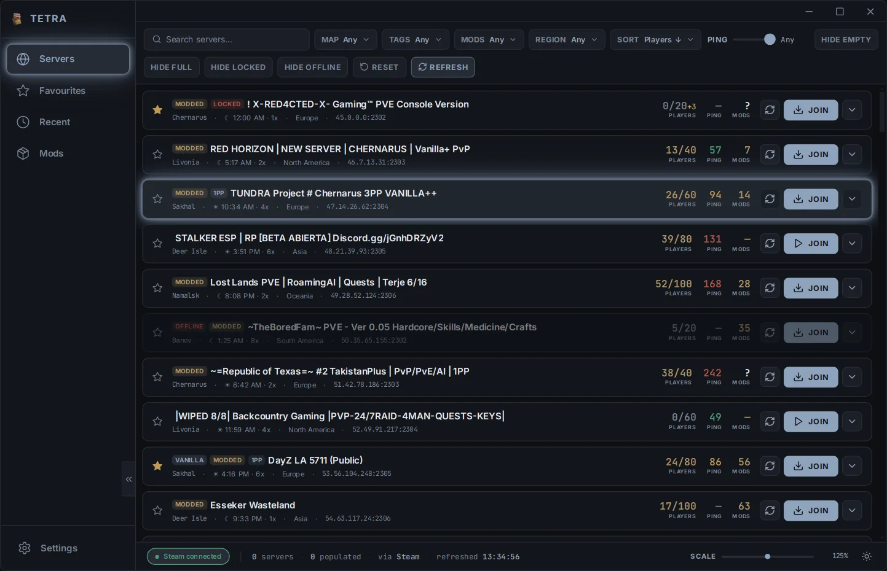
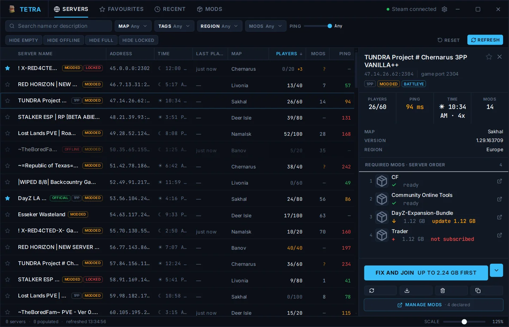
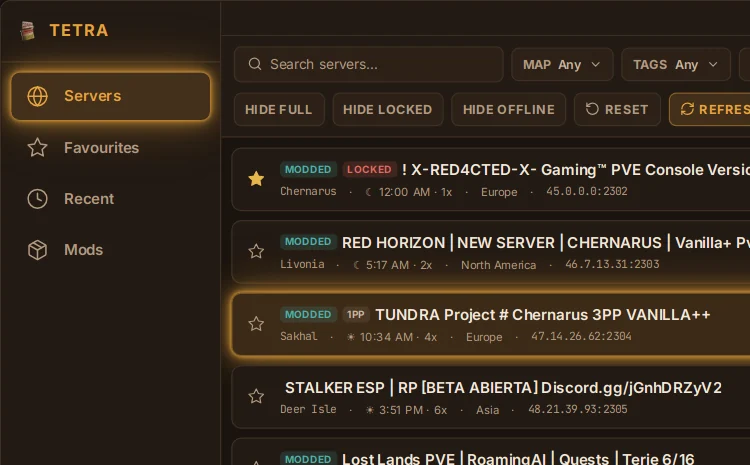
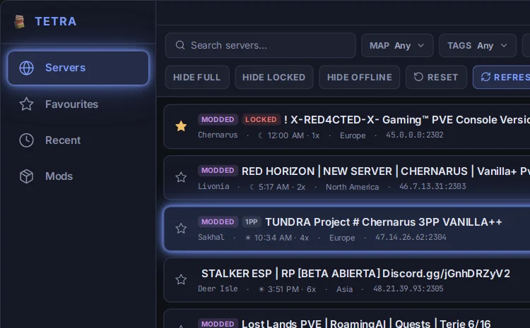
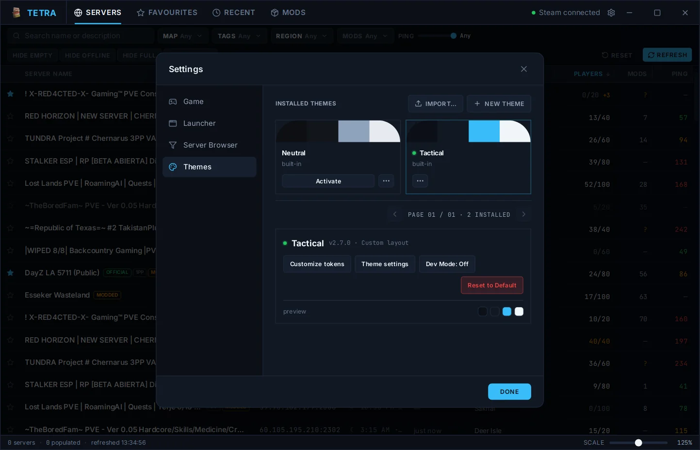
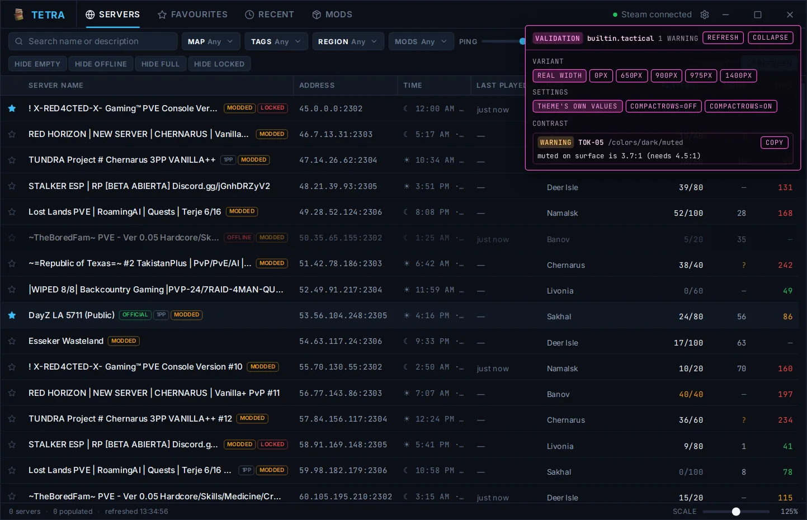

Making a theme
A theme can recolour Tetra Launcher, restyle any part of it, or rearrange the whole window. It's a folder of JSON and CSS, and the launcher checks every file, so a mistake shows up as a clear error instead of a broken window.


What a theme can change
Themes come in three levels. Each one is a working theme on its own, so start with the smallest one that does what you want.
Colours only
starter.coloursA new palette for dark and light mode. Nothing else to learn.
Styled
starter.styledYour own CSS for any element, plus settings users can tune.
Custom layout
starter.layoutMove things around: panels, columns, navigation, window controls.


Recolour without code
To change colours only, you don't need to touch any files. This works on Neutral, Tactical or any theme you've installed:
- Open Settings → Themes and activate the theme you want to recolour.
- Press Customize tokens. Pick colours for dark and light mode, and adjust glow, corner roundness and fonts if you like.
- Type a name and press Save theme.
Your theme keeps the original's layout and styling with your colours, and shows up in the theme list. Later edits save with Save changes, and Export shares it.
Your first theme
- Open Settings → Themes and press New theme. Pick the starter closest to what you want. The launcher copies it into a new theme of your own and switches to it.
-
Open Settings → Launcher → Open data folder. Your theme is in
themes/<your-theme-id>/. - Turn on Dev Mode in Settings → Themes. It reloads your theme every time you save a file and lists anything the launcher rejected.
- Edit, save, look. When you're happy, use Export to share it.

The package
A theme is a folder named after its id. Only theme.json is
required. A layout file you leave out keeps Neutral's version of that screen.
Each file below needs the capability next to it declared in
theme.json.
- theme.jsonrequired · name, version, capabilities
- tokens.jsontokens · colours, sizes, fonts
- styles.csscss · your stylesheet
- settings.schema.jsonsettings · options users tune
- layout/layout · one file per screen
- shell.jsonthe window frame
- views/browser.json · views/mods.jsonthe two main views
- lists/servers.json · lists/mods.json …list columns and rows
- modals/ · popups/ · settings.jsondialogs and Settings
- fonts/ · images/fonts · images
- previews/up to 5 preview images
theme.json
{
"schemaVersion": 2,
"themeApi": "2.0",
"id": "midnight-ops",
"name": "Midnight Ops",
"author": "you",
"version": "1.0.0",
"minimumLauncherVersion": "2.6.0",
"capabilities": ["tokens", "css"]
}
Capabilities must match your files exactly. Declaring
css without a styles.css, or shipping one without
declaring it, is an import error. The id must match the folder name, and ids
starting builtin. are reserved.
Colours and tokens
tokens.json holds your palette and, optionally, sizes and fonts.
Every key is optional. Anything you leave out keeps Neutral's value, so you can
change one thing at a time.
{
"schemaVersion": 2,
"colors": {
"dark": { "bg": "#0e1016", "surface": "#151824", "accent": "#7c9cff", "text": "#e5e9f5" },
"light": { "bg": "#f2f3fa", "surface": "#ffffff", "accent": "#3a4fbf", "text": "#171a2b" }
},
"scales": { "radius": { "md": "8px" } },
"roles": { "color": { "onAccent": "#0e1016" } }
}
-
colors.darkandcolors.lighttake the same twelve colours:bg,surface,surface2,border,text,muted,muted2,accent,accent2,success,warn,danger. Hover states and soft fills are worked out from these. - A
scalesentry changes one step of a scale. The rest keep their defaults. - A
rolesentry points a role at a scale step ("md") or a value ("8px").
Colours are per mode, roles are not. onAccent is
used on top of both your dark and your light accent. Check it against both, or
it may be unreadable in the mode you didn't test.
Styling with CSS
Every part of the launcher carries a stable data-el name, and those
names are what your CSS targets. Your rules always win over the launcher's
defaults, so you never need !important (it's refused anyway).
/* An element */ [data-el="server.join"] { border-radius: var(--t-radius-control); } /* A part inside it, and a state */ [data-el="server.players"] [data-part="caption"] { color: var(--muted); } [data-el="server.join"][data-state~="busy"] { opacity: 0.6; } /* Only the copy in the selected-server panel */ [data-context="selection"] [data-el="server.name"] { color: var(--accent); }
A few things are off limits so a theme can't break the launcher or reach the network:
[data-el="server.join"] { z-index: 5; } CSS-04 [data-el="server.join"] { color: red !important; } CSS-01 @import url("other.css"); CSS-06 .box { background: url("https://example.com/x.png"); } CSS-07
Colours are --bg, --accent and friends; everything else
is prefixed --t-, like --t-radius-row and
--t-type-family-ui. The reference
lists every selector, property and variable you can use.
Custom layouts
With the layout capability, each screen is one JSON file: a tree of
containers (stack, grid, scroll,
tabs …) holding the launcher's elements. This one puts the server
details on the left of the list:
{
"schemaVersion": 2,
"root": {
"type": "stack", "direction": "row",
"children": [
{ "type": "stack", "context": "selection", "direction": "column",
"children": [
{ "element": "server.name" },
{ "element": "list.serverMods" },
{ "element": "server.join" },
{ "element": "server.actionNotice" }
] },
{ "element": "list.servers", "grow": 1 }
]
}
}
- Every
elementmust be one the launcher knows. The element list has all of them. - Some elements are required: window controls, navigation, and a notice beside every Join button. A file that drops one is replaced by Neutral's version of that screen.
- Tab order is file order. Keyboard users move through your layout in the order you wrote it.
Theme settings
settings.schema.json adds your own options under your theme in
Settings: numbers, on/off switches, choices and colours. A saved value reaches
your CSS as --setting-<id>, and can show or hide parts of your
layout.
{
"schemaVersion": 2,
"fields": [
{ "id": "compactRows", "type": "boolean", "label": "Compact rows", "default": false },
{ "id": "panelWidth", "type": "number", "label": "Panel width",
"min": 240, "max": 420, "default": 300 }
]
}
Checking your work
Dev Mode shows what the launcher thinks of your theme while you edit it: outlines on every element, a click-to-pin inspector, contrast warnings, and a switcher to preview each window width and settings combination.

If a required element is hidden, off-screen or covered, only the file it lives in falls back to Neutral, and the panel names the element and the reason. Your colours and CSS stay in effect.
Limits
| Limit | Value |
|---|---|
| Files per package | 64 |
| Package size, uncompressed | 8 MB |
styles.css | 256 KB |
| Image size | 4096 × 4096 |
| Nodes per layout file | 2,000 |
| Width variants per file | 4 |
| Preview images | 5 |